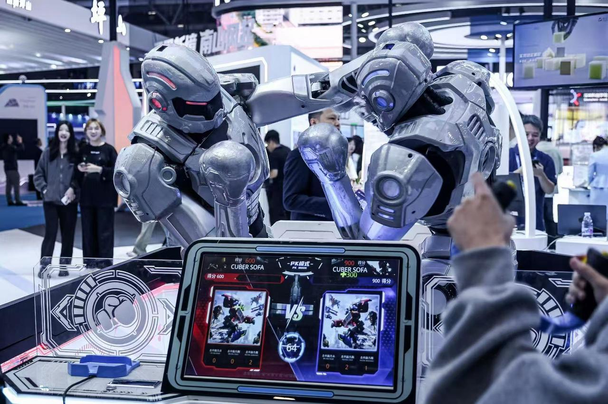
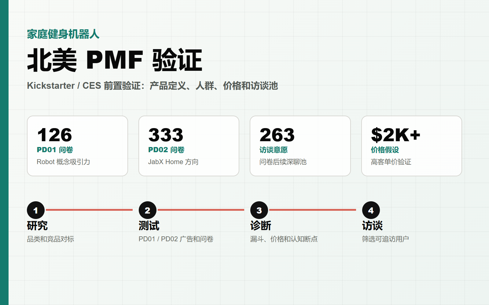
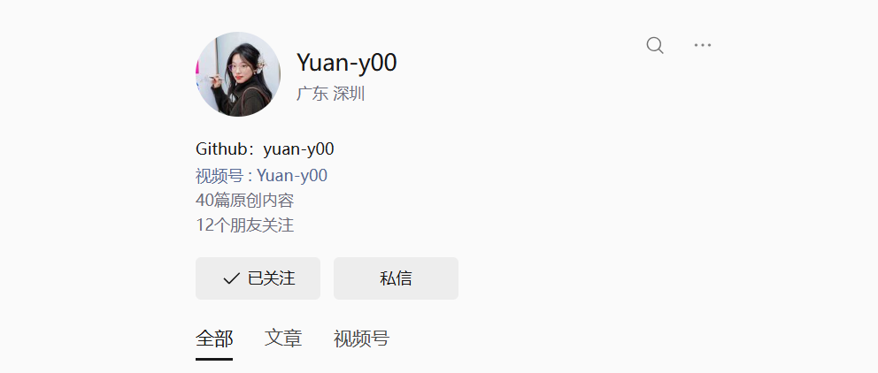
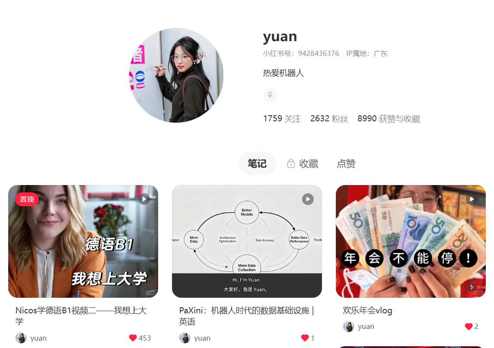

在迁星智能，我参与过两个机器人相关方向：AI 格斗机器人从 0 到 1 搭建渠道销售体系， 以及家庭健身机器人的北美 PMF 论证、用户研究与运营和品牌共创。
公众号 yuan-y00 记录了我的机器人行业观察；小红书 yuan 做德语视频。
项目

把早期具身智能娱乐硬件从低价贴牌假设，重构为自有品牌、直销和渠道并行的商业化路径。 项目沉淀了线索、报价、合同、交付、售后和供应链反馈的闭环。

从 Kickstarter 目标倒推产品定义和市场表达：本次众筹主推家庭互动有氧，机器人方向保留为长期高端产品路线。

用访谈、平台内容分析、社区冷启动、品牌共创和线下内测，补齐 PMF 样本并观察用户真实行为。
经历
北美 PMF 论证与用户研究
围绕 Kickstarter 上线前的产品表达、目标人群和用户证据，拆成 PMF 论证与用户研究运营两条链路。
- 完成三种市场表达与行动承诺测试
- 沉淀 Leads、访谈、社群和线下内测证据
- 本次众筹主推 Home，机器人保留为长期高端路线
从 0 到 1 搭建渠道销售体系
把早期娱乐硬件从低价贴牌假设，推进为自有品牌、直销和渠道并行的成交路径。
- 渠道、合同体系搭建 0 到 1
- 渠道管理 SOP
- 售后和供应链管理
科研成果转化项目市场 0 到 1
制作小红书和公众号内容，将科研文章用通俗易懂的语言讲解；开拓养老机构、中医诊所等合作渠道，推动“店中店”试点。
- 运营小红书、公众号、私域社群
- 将科研成果普惠大众
- 市场 0 到 1 冷启动
产品经理和国际化团队管理
融合魔术与编程教育，定义海外儿童教育娱乐机器人产品，并组织早期资源定义产品，验证 2B2C 模式。
- 管理 13 人团队
- 魔术师与教育机构资源整合
- 香港学校合作测试
亚马逊运营：美国 / 德国 / 沙特
负责多站点运营增长、评价修复和库存预测，追踪搜索词和社媒内容热潮，KOL 运营。
- 美国新品车充从 0 至 BSR
- 德国产品线周销售额 +58%
- 沙特站点 0 到 1
柔性结构研发与供应链管理
主导柔性结构从 0 到 1 研发，包含外观、气囊加压和导热系统，管理供应链和工业设计等外包，主导量产爬坡、融资和展会推广。
- 163 家供应链资源
- 20 台到 500 台产能爬坡
- CES、CCEE 等展会露出
内容

公众号 yuan-y00
行业观察与销售判断：关注具身智能、机器人商业化、展会、渠道和产业链信号。

小红书 yuan
德语教学内容作为长期输出训练，展示选题包装、表达拆解、更新节奏和用户反馈能力。
联系
GitHub：yuan-y002426941529@qq.com · 19356010751